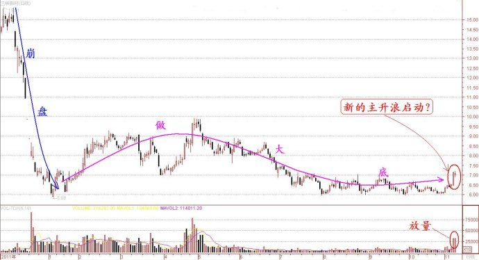
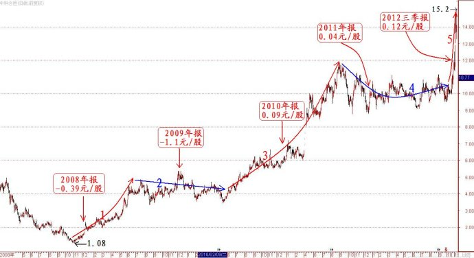

第279篇•对中科合臣等庄股的粗浅分析
谷为陵
我这几天很忙，本来没有时间更新博客。但有不少网友问了一些问题，我又不好长久不作答，所以，今天就抽出时间简要谈谈。
有个叫“千年”的网友昨天给我留了张纸条“谷老师，你去年关于三峡新材的帖子给我留下深刻的印象。今天三峡新材放量拉升，我觉得有一波主升浪，对否？”
在回答这个问题之前,让我们先看看三峡新材的走势：

大家看到三峡新材的走势后，会有什么看法呢？会认为这是启动了一轮新的主升浪了吗？不管你是怎样认为的，你总得讲出个道道来吧。我想“千年”网友的想法是，既然这只股票的庄家被“套”了，且股价在底部做出了一个几乎长达一年的大底，应该会出现一轮较大涨幅的反弹行情吧。
为了解答三峡新材的走势问题，我又想起了网友“Muyi13”昨天的一个留言：“谷老师，我提出一个问题：主升浪是很好，但参与主升浪需要解决的一个很大的问题：怎样估值或评估？主升浪是否具有持续性？这两个问题直接决定了是否参加，结果的成败。”
我随后给“muyi13”网友回复了留言，现摘录如下：“你提的问题很好，抓主升浪要解决很多问题，包括选股、估值、主升浪启动信号、主升浪持续性、买点、卖点、风险控制、资金管理等，但所有这些问题又都是统一在一起，不可分割的。解决其中任何一个单一的问题，并不能保证操作的成功，这就是我为什么要从头来讲主升浪的问题的用意了。抓主升浪是一个整体性的、系统性的工程，以前从没有人这样讲过，这也是我多年投资实践后的感悟。所以，我说我的股票操作方法是整体论的方法，也许有人认为是故弄玄虚，但实际上这是必然之法。比如，不对股票进行估值，你就不知道主升浪的高度，也就不清楚主升浪有无持续性，光靠技术分析是不能得到答案的。要得到接近真相的答案，就需要进行基本面、市场面、技术面这三面的整体性分析，但遗憾的是，现在还有很多技术派网友过于看重技术分析，而轻视其它两方面的重要因素对于股价的影响力。不要着急，所有问题我都会讲的，但需要一点点来，因为不把话说清楚，不把逻辑关系理清楚，是不能服人的。”
对于主升浪以及股票投资的所有问题，我的观点始终是一致的。对于三峡新材昨天的放量大涨是否是一轮主升浪，我的回答是，不能确定！为什么呢？我还是按照基本面、市场面、技术面这“三面”来进行分析。从技术面看，该股经过长期筑底后，似乎有反弹的要求，但反弹的高度有多高，那就需要对该股进行估值。估值分为两个方面：用基本面评估投资价值，用市场面评估投机价值。在基本面方面，该股的业绩很差，三季报只有0.015元，几乎到了亏损的边缘，毫无投资价值可言。在市场面方面，该股现在没有任何炒作题材，不属于市场炒作热点。该股的反弹，也许是因为近期市场在炒低价股和超跌股的缘故，但该股并不属于低价股范畴，与超跌股虽然还能够上点边，但其炒作性并不充足。因此，从
“三面”综合分析，我认为该股出现一轮主升浪的可能性很小。当然，也不能完全排除庄家硬做的可能性，但这种情况不是我能够分析出来的，对于我来说，就是具有不确定性的，而不确定性的事情，我们又如何知道确切的结果呢？
说到三峡新材这只曾经的庄股，这让我想到了现在市场上的另外一只大庄股——中科合臣（600490），该股是庄家硬做的一个极为典型的案例。
不管从那个角度上看，中科合臣都算得上是一只罕见的大庄股。说其罕见，一是运作时间之长罕见，该股自2008年11月就开始运作，至今已有4年，庄家仍乐此不疲；二是涨幅罕见，该股纯粹依靠炒作，竟然在4年里经股价翻了14倍之多，连那些我们津津乐道的高成长“药酒”股都自叹弗如；三是该股在巨大的涨幅衬托下，其业绩之差也是罕见的，4年中前两年是巨亏，这两年也仅仅是微利。为了让大家有个更直观的印象，我将该股4年来的每股收益标记在了其日K线走势图上，如下图所示（前复权）：

若要让我分析该股的走势，我是一点也分析不出来的。按照中科合臣这么差的基本面，谁能够给我解释该股有何理由在4年内上涨14倍吗？我相信没有人能够给出合理的理由，若硬要“给个理由先”，就只能说：“因为这是一只庄股”。什么是庄股？就是股价由庄家说了算的股票，或者更准确地说，是由庄家操纵的、股价涨势与基本面严重不符的股票。
中科合臣的故事还没有完。该股本来是一只高科技股，但高科技却被其彻底“玩残废”，于是，控股股东又开始在玩那个老掉牙的、最没有技术含量的游戏——通过增发融资买矿。看来，涉矿是所有快“狗屁着凉”的上市公司捞到的最后的救命稻草，也是庄家玩的最终的出货手段。这个游戏若一直玩下去，会是什么结果呢？恐怕A股大部分股票都会变成矿业股。而一旦未来矿产行业不再吃香，就像现在的煤炭行业那样，那么，届时这些A股的矿业股该怎么办呢？
谁都知道，买矿、挖矿是最简单不过的事情，这行当千年前就有。A股的上市公司搞来搞去，不是心向新经济，开拓新产业，而是越发倒退，几乎要退回原始社会，这是懒人的做法，不思进取的做法，这样的上市公司是没有前途的。
我们应该要更多的苹果，而非更多的煤矿。一个没有创新精神的国度，没有创新精神的市场，我们能够说什么呢？只能哀其不幸，怒其不争了。